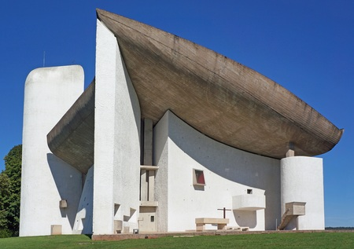

Les lieux incontournables
La Haute-Saône regorge de nombreux endroits qui plaisent aux promeneurs curieux. Nous avons pris soin de vous préparer une sélection de dix lieux qui, bien qu'incomplète tant les choix sont nombreux, vous révelera l'étendue des richesses de notre départment. Bonne découverte !
Champlitte - Le Chateau
Le château de Champlitte est un bâtiment construit vers 1768. Il abrite actuellement le Musée départemental d'arts et traditions populaires. Au Moyen-Age, c'est un château fort qui se dressait au centre de Champlitte. Cette demeure, incendiée plusieurs fois entre le XIIIème et le XVIème siècle fut totalement détruit au XVIème siècle puis remplacé par une charmante résidence. Demeure qui brûla de nouveau 200 ans plus tard. Seule sa façade style Renaissance pu être sauvée. Un nouveau château, en forme de U, fut alors reconstruit par l'architecte Claude-Joseph-Alexandre Bertrand et le sculpteur Luc Breton (dont de nombreuses oeuvres sont exposées dans des églises de Besançon). Achevé au début du XIXème siècle, ce château est celui que l'on connait aujourd'hui. Le château de Champlitte n'est plus habité depuis le début du XXème siècle. C'est en 1957 qu'il deviendra le musée départemental d'Arts et Traditions Populaires et fera partie des Musées départementaux Albert et Félicie Demard du nom d'une famille passionnée par la France rurale des années 1880 - 1915.
Photo de Jérôme Bardiau - License CC BY-SA 4.0Ronchamp - La Chapelle Notre-Dame
La chapelle Notre-Dame du Haut est une chapelle catholique construite de 1953 à 1955 sur la colline de Bourlémont à Ronchamp. C'est une création de l'architecte franco-suisse Le Corbusier. Elle est érigée à l'emplacement d'un ancien sanctuaire romain et d'une ancienne chapelle reconstruite une première fois dans l’entre-deux-guerres. Elle est inscrite aux monuments historiques en 1965 puis classée en 1967. C'est en 1999 qu'elle obtient le label Patrimoine du XXe siècle. En 2011, une nouvelle porterie ainsi qu'un Couvent sont construits sur les plans de l'architecte Renzo Piano. Le site est inscrit, avec 16 autres œuvres architecturales de Le Corbusier, sur la liste du patrimoine mondial de l' UNESCO en 2016. Elle fait partie de l' itinéraire culturel européen intitulé « Destinations Le Corbusier : promenades architecturales » créé en 2019. La chapelle est pleine de contradictions architecturales, à la fois carrée et ronde, élancée et trapue, basse et haute. Selon Christophe Cousin, le directeur du Musée d'art et d'histoire de Belfort : « Elle a un plan très simple mais quand on est sur place, ce n'est pas du tout évident ». Vaste et ouverte sur l'extérieur, elle devient, le seuil franchi, un tout petit lieu de recueillement. Avec le blanc éclatant de ses murs, elle semble illustrer le grand principe de son architecte, pour lequel « l'émotion architecturale, c'est le jeu savant, correct et magnifique des volumes assemblés sous la lumière ». Le travail de la lumière est plus sensible encore dans la chapelle. Anecdote : Le film Trance de Danny Boyle, sorti en 2013, a été brièvement tourné dans la (chapelle).
 Photo de A.BourgeoisP - License GPL 1.2Ray sur Saône - Le Chateau
Le château de Ray-sur-Saône est un ancien château fort datant du Xe siècle reconstruit en style classique au XVIIIe siècle situé à Ray-sur-Saône (village classé « Cité de caractère de Bourgogne-Franche-Comté »). Le château appartient au département de la Haute-Saône, depuis la donation de Mademoiselle Diane Baconnière de Salverte du 29 mai 2015. Il est en parfait état de conservation et le parc est ouvert gratuitement à la visite.Il fait partie des plus beaux châteaux de la région de par sa richesse intérieure et extérieure. Le château est classé au titre des monuments historiques depuis novembre 20094. L'ancienne forteresse a fait l'objet de diverses transformations au fil des siècles et conserve des traces de chaque époque traversée, même si elle fut très endommagée par la guerre de Dix Ans. Pour l’essentiel, c’est une bâtisse de 1720 et après. Cependant, on peut facilement deviner ce qui n’est plus, comme les fossés entourant le château, désormais comblés, ou le pont-levis dont on entrevoit encore l’emplacement. Établi sur un promontoire rocheux et niché au cœur d’un parc arboré de six hectares, le chateau possède une architecture remarquable. Le site offre un panorama exceptionnel sur le village, labélisé cité de caractère de Bourgogne-Franche-Comté. Elément emblématique du paysage, sa puissante silhouette domine la vallée de la Saône. Édifié au Moyen-âge, Ray est alors une forteresse appartenant à de puissants seigneurs. En grande partie détruit par les guerres du XVIIe siècle, le château est reconstruit sur les ruines de l’ancienne forteresse. Au XVIIIe siècle, il prend l’aspect qu’il présente encore aujourd’hui. Malgré les différentes périodes de construction, il offre un ensemble sobre et homogène. Les jardins sont aussi les témoins des différents aménagements paysagers qui ont suivi les évolutions du Château. Majestueux, le site est entièrement classé au titre des Monuments historiques depuis 2011
Photo de Y. Goux sur https://fondation-patrimoine.orgLuxeuil-les-Bains - Les thermes
C'est sous le règne de Louis XV que furent construits les thermes de Luxeuil-les-Bains d'architecture classique en grès rose des Vosges : l'établissement est inauguré en 1768. La ville de Luxeuil cède la concession à l'État en 1853. Napoléon III remarqua le lieu et y passa une saison avec l'impératrice Eugénie en 1856. Bien qu'il ait préféré Plombières-les-Bains, sa visite contribua fortement à relancer la station de Luxeuil, qui devint rapidement à la mode. Au début du XXe siècle, de nombreuses personnalités, comme Sacha Guitry ou Yvonne Printemps, s'y font remarquer. Le lieu est alors réputé pour son élégance et pour son parc. De nombreux grands hôtels, Hôtel des Thermes, Métropole, du Parc, des Sources, etc., sont construits ainsi que des villas. En 1936, la municipalité récupère les thermes ; une piscine thermale moderne est construite en 1938-1939. On comptait alors 18 sources (aujourd'hui captées) dans le parc, dont la Fontaine d'Hygie déclarée d'intérêt public en 1858, et dont l'eau fut commercialisée. Après une période hésitante, l'activité thermale a bénéficié d'un certain renouveau. De 1914 en 1935, le nombre de curistes passe à 2 000 en 1954 et 3 000 dix ans plus tard. Aujourd'hui la population de la ville augmente toujours significativement lors de la saison estivale. L'édifice est classé au titre des monuments historiques en 1862 et 1942, et inscrit en 2011
Photo de Ginette Mathis - CC BY-SA 3.0Vesoul - la Motte
La Motte est une colline située au centre de Vesoul et qui surplombe la vallée du Durgeon à 371 mètres d'altitude. Avec une ascension de plus d'un kilomètre, on y trouve au sommet, par temps clair, une vue sur la plaine de Vesoul, les Vosges, le Jura et même les Alpes. Site classé par décret du 9 mars 2004 pour son caractère « pittoresque » on y trouve au sommet un monument abritant une statue de la Vierge Marie en bronze peint de couleur blanche, haute de 3,50 mètres. Ce sanctuaire a été voué à Marie dès le début du Moyen Âge, d’abord sous le nom de Notre Dame du Chastel de Vesoul, puis après plusieurs siècles durant lesquels la statue primitive a été transférée dans différents lieux, sous celui de Notre-Dame-de-la-Motte à partir de 1854. La chapelle, monument historique et important du patrimoine de Vesoul, est bâtie à l'emplacement même de l'ancienne cité Castrum Vesulium. Sa construction a été le fruit d'une longue préparation, rassemblant alors des milliers de personnes durant des congrès et des processions. Archéologiquement, elle a permis, entre autres, la découverte d'objets anciens, telle une pièce de canon très ancienne qui garnit fortement l'histoire médiévale de Vesoul. Ce canon, qui repose d'ailleurs au musée Georges-Garret, faisait partie de l'ancien château. À Vesoul, la chapelle est le symbole complet de la protection de la mère de Jésus. Cette croyance est due au fait que les habitants sont épargnés par l'épidémie de choléra en 1854. Notre-Dame-de-la-Motte est le monument le plus connu de Vesoul, et historiquement celui qui a été le plus cité dans des ouvrages ainsi que le plus étudié et décrit en détail. Le sentier qui mene à la Motte ainsi que celui du sanctuaire de Notre-Dame-de-la-Motte, ponctué par quatorze stations représentants le Chemin de Croix, sont devenu un lieu de pèlerinage.
Photo de Segdjfj - Licence CC - Attribution Share Alike 4.0Fougerolles - pays de la cerise
Fougerolles est une commune assez étendue de 5 112 hectares, limitrophe de la région Lorraine et comptant de nombreux hameaux. C'est l'une des 189 communes du Parc naturel régional des Ballons des Vosges. Ses habitants sont appelés les Fougerollais. Le 1er janvier 2019, elle fusionne avec Saint-Valbert pour former la commune nouvelle de Fougerolles-Saint-Valbert dont elle devient le siège. Cette une commune réputée pour son économie gastronomique liée aux cerises notamment utilisées pour la fabrication du kirsch et des griottines de la distillerie Peureux, ce qui lui valu le surnom de pays de la cerise. Si l'activité de distillation est moindre qu'à une époque (4 distilleries en activité contre plus de 37 en 1900), elle reste une des principales ressources du village ; il faut y ajouter 50 paysans-distillateurs artisanaux ! Ces dernières années on a pu voir de nombreuses distilleries redonner vie à l'absinthe comme par exemple la Distillerie Lemercier, plus ancienne distillerie qui fut créé avant 1800. L'absinthe, boisson à base de la plante du même nom, ayant défrayée la chronique au début du XXe siècle (interdite en France en 1915 puis réautorisée par décret en 1988) a également un jardin qui lui est dédié. On peut voir aussi dans cette charmante commune l'Église Saint-Étienne de Fourgerolles remarquable édifice du dernier quart du XVIIIe siècle, classé Monument Historique en 1978.
Photo des cerisiers en fleurs - Alain Jacquot-Boileau -Chariez - Le Camp de César
Le Camp de César est un plateau surplombant les communes de Chariez et de Vaivre-et-Montoille, inscrit à l'Inventaire national du patrimoine naturel en 1996. Le plateau est occupé depuis la préhistoire (paléolithique), comme en témoigne la découverte de pierres taillées datant du magdalénien. Contrairement à ce qu'on pourrait penser (et à ce qui se dit à son sujet) il n'y a vraisemblablement pas eu d'occupation romaine au Camp de César. La mention "Camp romain" est portée sur les cartes de Cassini et de l'État major. La situation du plateau, la levée de terre et de pierres protohistorique barrant l'accès et la situation dominante peuvent expliquer cette méprise. De nombreux lieux portent le nom de "Camp romain" en Haute-Saône, et les trois méritent qu'on les découvrent également :
- Le Plateau de Cita à Echenoz-la-Méline
- Le plateau du Sabot à Frotey-les-Vesoul
- Le Camp de César de Chariez
Les roches surplombant la grotte au sud-ouest du plateau offrent une vue panoramique superbe sur le village et toute la vallée de Chariez. Les falaises bordant le plateau sont équipées pour la pratique de l'escalade. On y trouve une piste d'envol de deltaplane et parapente au nord du plateau, avec l’atterrissage dans la plaine au lieu-dit Fontaine-Froide. Les points de vue et les sentiers sont prisés des promeneurs et permettent d'admirer les vallées environnantes ainsi que la colline de la Motte (voir plus haut) et le Lac de Vaivre. Ses 163 hectares entre 241 et 386 m d'altitude englobant le plateau et les coteaux sont inscrits à l'inventaire national du patrimoine naturel.
Photo de Pivoine - cancoillotte.netVillersexel - Le Chateau
Le Château de Villersexel, contruit de 1882 à 1887, a été conçu dans le style Louis XIII par l'architecte Eugène Gustave Edouard Danjoy. Son mobilier date également de cette époque. Il remplace un autre château détruit en 1871 pendant la bataille de Villersexel, qui a longtemps appartenu à la famille de Grammont. Après une inscription par arrêté du 23 février 1981, le château fait à présent l'objet de trois arrêtés de protection distincts :
- Le logis et les écuries, tous deux en totalité, font l’objet d’un classement au titre des monuments historiques depuis le 29 mars 2005.
- Le parc du château et les ruines de l'ancien château font l’objet d’une inscription au titre des monuments historiques depuis le 29 mars 2005.
- Enfin, dans la continuité de l'inscription de 1981, les façades et toitures des autres bâtiments (le bâtiment d'entrée dit la Régie, le logement du portier, la tour et les remises voisines, l'ancienne laiterie, la serre, l'orangerie et l'ancien manège font l’objet d’une inscription au titre des monuments historiques depuis le 19 décembre 20012.
Il s'agit aujourd'hui d'une résidence privée qui abrite par ailleurs un musée. En outre, le château est un lieu de réception pour les mariages et soirées privées. Dans ce lieu d’exception, c’est une page d’histoire que vous découvrirez : l’histoire d’un endroit, d’une famille, d’un patrimoine français meublé et habité comme il l’était il y a un siècle. Selon la revue « Propriété de France » : le château de Villersexel est le plus beau château du 19ème siècle, tant pour son aspect intérieur, extérieur, que pour la présence des meubles d’origine. En plus de la beauté et de l'intérêt historique des lieux vous pourrez profiter du silence qui est une des qualités de ce lieu. Vous aurez tout à loisir le temps d’arpenter les chemins forestiers et de longer la rivière qui entoure le parc du château…
Photo de Sephora fr - Licence CC BY-SA 3.0Arc et Senans - la Saline royale
Classée Patrimoine Mondial de l’UNESCO depuis 1982, la Saline royale d’Arc et Senans est le chef-d’œuvre de Claude-Nicolas Ledoux (1736-1806), architecte visionnaire du siècle des Lumières. Elle constitue également un témoignage rare dans l’histoire de l’architecture industrielle. Manufacture destinée à la production de sel, la Saline Royale a été créée de par la volonté de Louis XV et construite entre 1775 et 1779. La Saline Royale fonctionnait comme une usine intégrée où vivait presque toute la communauté du travail. Construite en forme d’arc de cercle, elle abritait lieux d’habitation et de production, soit 11 bâtiments en tout : la Maison du Directeur, les Ecuries, les bâtiments des Sels Est et Ouest, les Commis Est et Ouest, les Berniers Est et Ouest, la Tonnellerie, le bâtiment des Gardes et la Maréchalerie. Rendue obsolète par l’apparition de nouvelles technologies, la Saline Royale a fermé ses portes en 1895. Abandonnée, pillée, endommagée par un incendie en 1918, le Département du Doubs en a fait l’acquisition en 1927 la sauvant ainsi de la ruine. Trois campagnes de restauration successives achevées en 1996, lui redonnèrent son éclat. Le parti architectural de la Saline royale, son histoire et sa réhabilitation en font un monument unique au monde qui s’ouvre aujourd’hui à tous les publics. Expositions, festival des jardins, concerts, résidences de chercheurs, animations pour les enfants, colloques, expériences innovantes ponctuent chaque saison culturelle. Un nouveau projet d’aménagement paysager est en cours de route: Un Cercle immense. Un projet exceptionnel car pour la première fois, un site UNESCO va se transformer tout en respectant les critères qui ont présidé à son inscription sur la Liste du patrimoine mondial.
Photo aérienne de la Saline - https://www.salineroyale.comLa région des Milles Étangs

La Région des Mille Étangs, aussi appelée Plateau des Mille Étangs, est une zone géographique de plus de 220 km2 située essentiellement dans la partie nord-est du département de la Haute-Saône en région Bourgogne-Franche-Comté. À la fin de la dernière ère glaciaire, il y a 12 000 ans, le retrait du glacier de la Moselle débordant au dessus des Vosges saônoises a formé des surcreusement dans le socle primaire qui recouvrait la région favorisant la formation de tourbières, marécages. Au Moyen Âge, l'espace est transformé par l'Homme qui y développe la pisciculture en aménageant des étangs. Ces réserves d'eau sont ensuite utilisé au XIXe et XXe siècle par les industries textiles et papetières locales. Au début du XXIe siècle, cette région présent un intérêt environnementale de par ses zones humides qui abritent des biotopes remarquables et adaptés à un milieu froid et humide. Cette région des Mille étangs est reconnue comme zone naturelle d'intérêt écologique, faunistique et floristique (ZNIEFF), elle est en grande partie inclus dans une zone Natura 2000 et dans le parc naturel régional des Ballons des Vosges; au sud se trouve la réserve naturelle régionale de la tourbière de la Grande Pile. Les Mille étangs possèdent également un intérêt touristique par ses paysages qui lui valent le surnom de «Petite Finlande» par analogie avec les Mille Lacs finlandais. Cette région attire ainsi des randonneurs, VTTistes, pêcheurs et amateurs de nature. L'office de tourisme des mille étangs et le département proposent 22 randonnées dont la longueur varie de 4 à 24 km et une randonnée en itinérance de 80 km en quatre étapes. Tous les ans est organisé un festival de la randonnée : « Mille pas aux 1000 étangs ». En 2019, 18 associations se sont regroupées pour organiser 16 itinéraires de longueur et niveaux variables. Des activités de cyclotourisme sont également développées : trois boucles cyclables dont la longueur varie de 24 à 62 km, cinq circuits pour VTT dont la longueur varie de 15 à 28 km ; un service de vente, entretien et réparation de cycles est également proposé avec la possibilité de louer des vélos à assistance électrique (VAE). Un itinéraire balisé de 15 km est réservé à la randonnée avec raquette à neige et au ski de fond. Des randonnées équestres sont également proposées. Enfin, un itinéraire routier, « L'Échappée des 1000 Étangs », permet de visiter six lieux majeures agrémentés d’outils interprétation interactifs. Le plateau des mille étangs se retrouve particulièrement médiatisé lors du passage du Tour de France 2014, c'est pourquoi le département de la Haute-Saône souhaite labellisé cette région Grand Site de France pour ensuite candidater à une inscription au patrimoine mondial de l'UNESCO. Pour appuyer ces projets, une mission universitaire, composée de 13 chercheurs franc-comtois et lorrains, est constituée début 2018. Les études scientifiques sont restitués en mars 2019 lors d'une conférence public avec la presse locale et des élus du département.
Un des milles étangs, en aval d'Ecromagny - Photo de Jean Espirat - Creative Commons